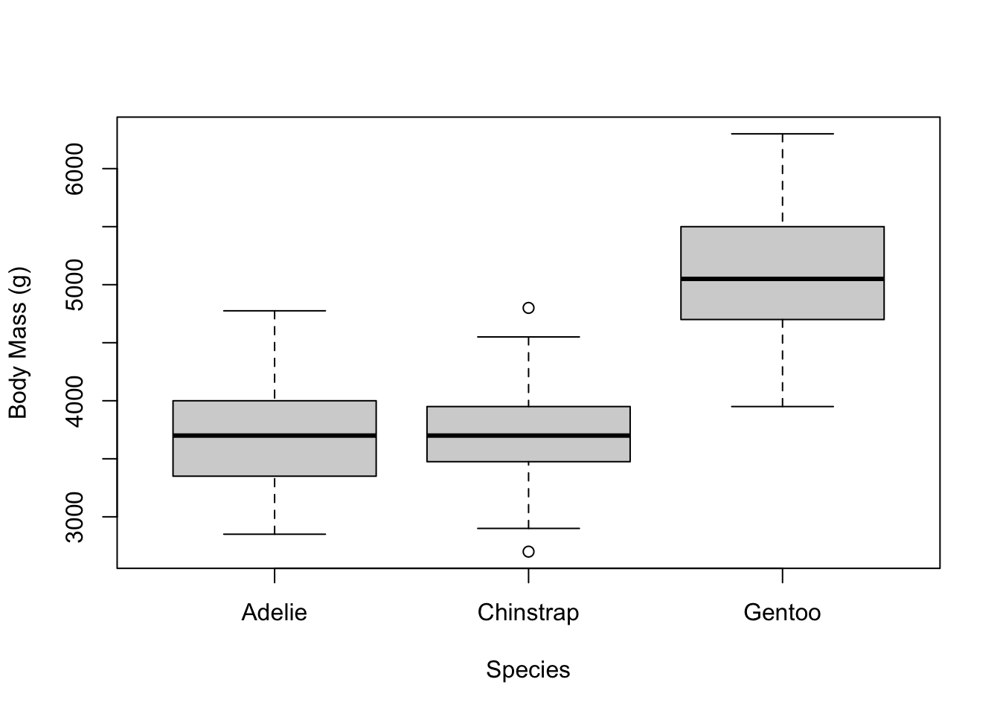
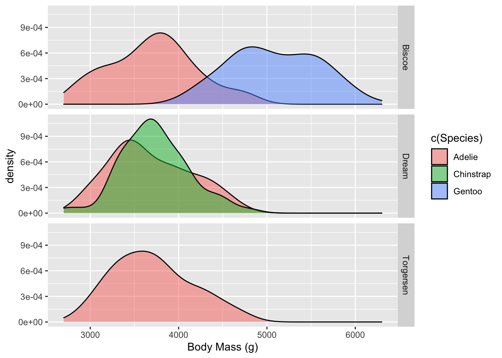

knitr::read_chunk('statistical_analysis.R')An example draft analysis script
This Quarto file loads the cleaned Palmer Penguins data and does some initial analysis. I find this step very helpful for seeing what results you have to work with for your talk or paper/final report.
Some of what is written below is for you. I would like you to modify this quarto file to produce a document customized for your analysis and written to explain your thinking in your data analysis so feel free to modify as much as you wish.
It is worth taking a minute to reflect on where we are in the data analysis workflow. The purpose of the previous processing document was to document data cleaning and processing in preparation for analysis. You saw that as part of the cleaning and processing step, we already had to explore the data somewhat to understand how to clean it. In general, as you explore, you find more things that need cleaning. As you clean, you find more to explore.
The need to document your workflow
Although we broke our workflow in this project into cleaning and analysis steps, depending on your project, it may be more logical to divide the scripts in other ways. The organization should naturally reflect the workflow.
In rather clean datasets at times it might make more sense to combine the cleaning and exploring code parts into a single R or Quarto file. But if you do have real errors to fix, you will want to carefully document cleaning steps, and probably not redo the cleaning each time you want to get a bit further on your data exploration and analysis. Itʻs a lot of baggage to carry around and also errors might creep in if you are keeping code in your script that you are not actively working on.
When there are natural breaks in the workflow (i.e., when you close the door on cleaning or on a first analysis), it can be a good idea to have start a new script because once you clean your data, you will have a new starting point for all of your downstream analyses (and not look back at the really raw data, unless you want to change your mind about some of the cleaning - thus the need for keeping an original raw data file and documenting all the steps).
This can also come up when you have a multi-stage analysis. In very complex analyses, it can make a lot of sense to have separate scripts for major analyses or workflow steps. As always, use your jugement, and be intentional about your organization. Clean organization = clear thinking.
Analysis
If you did a good job in the previous step, you should have a pretty good idea of the structure of the data.
For this part of the project, develop three questions and use your R skills to answer them. Begin by producing a summary table of the data that could be included in a future paper. You should produce plots or tables and/or statistics or model fits to address your questions.
Setup
This needs to run to load the R script so we can include the code chunks below.
Load needed packages and filepaths.
#load needed packages. make sure they are installed.
require(ggplot2) #for plotting
require(magrittr) #for piping
require(knitr) #for formatting output
#path to data and results
data_path <- "../../Data/Processed_data/"
results_path <- "../../Results/"Load custom functions.
# function to paste path to output filenames
addpath <- function( filename, path=data_path ) {
location <- paste( path, filename, sep="")
return( location )
}Load the data.
# load data.
dat <- readRDS( addpath("penguins.rds", data_path) )Create a summary table
In any paper you should always report a summary of the data. This includes basic statsistics for your data including sample size, counts, and means and standard errors for continuous data.
Here we will use skimr which produces a summary table, but with more than we want. Letʻs save it as an object so we can grab the elements we want.
It turns out that the skim() function returns a tibble. We can coerce it to a dataframe and use head() to see what the column names are and what the data look like.
# create summary table of the data using skimr to use in paper
# variables, sample size, mean, standard error
sk <- skimr::skim(dat) # save skim object
sk <- as.data.frame(sk) # save as data.frame
head(sk) # see the variable names skim_type skim_variable n_missing complete_rate character.min
1 character Individual ID 0 1.0000000 4
2 character Clutch Completion 0 1.0000000 2
3 character Date Egg 0 1.0000000 10
4 factor Species 0 1.0000000 NA
5 factor Island 0 1.0000000 NA
6 factor Sex 9 0.9734513 NA
character.max character.empty character.n_unique character.whitespace
1 6 0 190 0
2 3 0 2 0
3 10 0 50 0
4 NA NA NA NA
5 NA NA NA NA
6 NA NA NA NA
factor.ordered factor.n_unique factor.top_counts numeric.mean
1 NA NA <NA> NA
2 NA NA <NA> NA
3 NA NA <NA> NA
4 FALSE 3 Ade: 151, Gen: 120, Chi: 68 NA
5 FALSE 3 Bis: 164, Dre: 124, Tor: 51 NA
6 FALSE 2 MAL: 168, FEM: 162 NA
numeric.sd numeric.p0 numeric.p25 numeric.p50 numeric.p75 numeric.p100
1 NA NA NA NA NA NA
2 NA NA NA NA NA NA
3 NA NA NA NA NA NA
4 NA NA NA NA NA NA
5 NA NA NA NA NA NA
6 NA NA NA NA NA NA
numeric.hist
1 <NA>
2 <NA>
3 <NA>
4 <NA>
5 <NA>
6 <NA>nrows <- dim(dat)[1] # total number of rows
sk$N <- nrows - sk$n_missing # sample size of each variableSelect columns for a final summary table
Letʻs retain only the variable, N, mean, sd, and category counts, but letʻs rename them. Since we will use the SD to compute the stadard error letʻs just rename it as SE now and save a step later. (Remember the standard error is just the standard deviation/ square root(sample size)).
Note: The results="asis" is an option for knitr to layout the the results without the code formatting. Normally output from code chunks has the look of R output. "asis" (as in “as is”, lol) removes that behavior, so we can lay it out as a typeset table for print.
# select only the variable, N, mean, sd, and category counts
sk.table <- sk[c("skim_variable", "N", "numeric.mean", "numeric.sd", "factor.top_counts")]
names(sk.table) <- c("Variable", "N", "Mean", "SE", "Counts") # rename SD as SE
sk.table$SE <- sk.table$SE/sqrt(sk.table$N) # calculate SE
options(knitr.kable.NA = "")
knitr::kable(sk.table, digits=2)| Variable | N | Mean | SE | Counts |
|---|---|---|---|---|
| Individual ID | 339 | |||
| Clutch Completion | 339 | |||
| Date Egg | 339 | |||
| Species | 339 | Ade: 151, Gen: 120, Chi: 68 | ||
| Island | 339 | Bis: 164, Dre: 124, Tor: 51 | ||
| Sex | 330 | MAL: 168, FEM: 162 | ||
| Culmen Length (mm) | 339 | 43.90 | 0.30 | |
| Culmen Depth (mm) | 339 | 17.17 | 0.11 | |
| Flipper Length (mm) | 339 | 200.79 | 0.76 | |
| Body Mass (g) | 339 | 4196.17 | 43.62 | |
| Delta 15 N (o/oo) | 327 | 8.74 | 0.03 | |
| Delta 13 C (o/oo) | 328 | -25.68 | 0.04 |
# save summary table
saveRDS(sk.table, file = addpath("summary_table.rds", results_path))Do species differ in size?
As an example, letʻs ask the question Do species differ in size? Our first try is a boxplot of mass by species:
# plot to screen
with(dat, plot(`Body Mass (g)` ~ Species))
# plot to .png file, can also do pdf using `pdf()` function
png(filename = addpath("mass_species_bars.png", results_path))
with(dat, plot(`Body Mass (g)` ~ Species))
dev.off()quartz_off_screen
2 The results were created by the statistical_analysis.R script and to the Results folder. Depending on how many tables/figures and workflow steps you have, it might make sense to have subfoldersf. Just choose a setup that makes sense for your project and works for you, and provide enough documentation that someone can understand what you are doing.
Now letʻs try a density plot
Provide a brief diescription of your results. To test the statistical significance of this result we can use ANOVA. We see that species do differ in size and this is a very robust statistical result.
# fit linear model using mass as outcome, species as predictor
lm.fit.s <- lm(`Body Mass (g)` ~ Species, dat)
anova.table.s <- anova(lm.fit.s)
# print to screen the anova table
print(anova.table.s)Analysis of Variance Table
Response: Body Mass (g)
Df Sum Sq Mean Sq F value Pr(>F)
Species 2 145838050 72919025 339.27 < 2.2e-16 ***
Residuals 336 72215714 214928
---
Signif. codes: 0 '***' 0.001 '**' 0.01 '*' 0.05 '.' 0.1 ' ' 1# save anova table to file in Results folder
saveRDS(anova.table.s, file = addpath("mass_species_anova.rds", results_path))Does the island have an affect on size?
What about an island effect? Since we know that species differ, we can include a two-way ANOVA and test both factors.
When we add island to the model after we account for species, it is not significant.
# fit linear model using mass as outcome, species and island as predictors
lm.fit.si <- lm(`Body Mass (g)` ~ Species + Island, dat)
anova.table.si <- anova(lm.fit.si)
print(anova.table.si)Analysis of Variance Table
Response: Body Mass (g)
Df Sum Sq Mean Sq F value Pr(>F)
Species 2 145838050 72919025 337.3166 <2e-16 ***
Island 2 13655 6827 0.0316 0.9689
Residuals 334 72202060 216174
---
Signif. codes: 0 '***' 0.001 '**' 0.01 '*' 0.05 '.' 0.1 ' ' 1saveRDS(anova.table.si, file = addpath("mass_species_island_anova.rds", results_path))However, if we add island first, before species, it is signficant! We interpret this as islands differing in mass as well, but islands are not as different as species are in mass.
# fit linear model again, but fit island first then species as predictors
lm.fit.is <- lm(`Body Mass (g)` ~ Island + Species, dat)
anova.table.is <- anova(lm.fit.is)
print(anova.table.si)Analysis of Variance Table
Response: Body Mass (g)
Df Sum Sq Mean Sq F value Pr(>F)
Species 2 145838050 72919025 337.3166 <2e-16 ***
Island 2 13655 6827 0.0316 0.9689
Residuals 334 72202060 216174
---
Signif. codes: 0 '***' 0.001 '**' 0.01 '*' 0.05 '.' 0.1 ' ' 1saveRDS(anova.table.si, file = addpath("mass_island_species_anova.rds", results_path))Letʻs plot both factors together to see whatʻs going on.
# create plot, subseted by species and faceted by island
q <- dat %>% # mass density by species
ggplot( aes(x=`Body Mass (g)`)) +
geom_density( aes(fill=c(Species)), alpha=.5) +
facet_grid(Island ~ .)
q
ggsave(filename = addpath("mass_species_island_density.png", results_path), plot=q) Saving 7 x 5 in imageNotes
For your own explorations, tables and figures can be “quick and dirty”. As long as you can see what’s going on, there is no need to polish them. That’s in contrast to figures you’ll produce for your final products (paper, report, presentation, website, etc.). Those should look as nice, polished and easy to understand as possible.